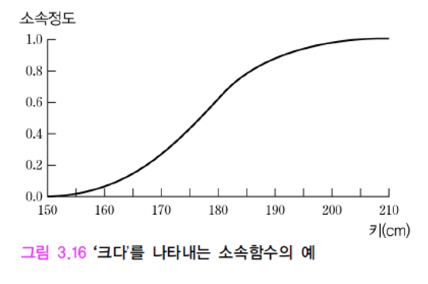

20221103
퍼지 이론
집합론
자연어의 단어 (word)는 집합의 궁극적인 표현
- ’자동차’는 자동차의 집합
- ’자동차 한 대’는 자동차 집합의 원소 하나
일반집합 (crisp set, classical set) X
- 원소 x는 X에 속하거나 (\(x \in X\)), X에 속하지 않거나 (\(x \notin X\)) 둘 중 하나
- 집합에 명확한 경계를 긋고, 집합의 원소에는 1, 원소가 아닌 것에는 0의 소속 (membership)
개념이나 범주가 항상 이분적이지는 않다.
- 자전거 vs 오토바이
정도(degree)의 문제 → 퍼지 집합 (fuzzy set) 도입
퍼지 집합 (fuzzy set)
원소가 모임 (collection)에 어느정도 속한다는 것
명제는 참 또는 거짓이 아니라 어느 정도는 부분적으로 참 (이거나 부분적으로 거짓)
소속정도 (membership degree)는 [0, 1] 범위의 실수값으로 표현

소속정도를 사용한 언어항 (linguistics term)의 표현

언어항을 포함한 지식 표현
퍼지 규칙 (fuzzy rule) 사용
- 소속함수로 표현된 언어항을 포함하는 규칙

언어항
- ‘나쁘다’, ‘좋다’, ‘훌륭하다’, ‘별로이다’, ‘맛있다’, ‘적다’, ‘보통이다’, ‘많다’
언어항을 표현하는 소속함수

퍼지 추론 (fuzzy interence)
소속함수로 표현된 언어항을 사용하는 퍼지 규칙들의 모음
언어항의 기호적인 대응을 통한 추론 대신, 수치적인 추론이 가능해짐
- 수치값 입력에 대해 수치값 출력을 생성

세 개의 퍼지 규칙에 대한 추론 결과

비퍼지화 (defuzzification)
- 퍼지추론의 결과를 실수 값으로 변환하는 것


확률 그래프 모델 (probabilistic graph model)
확률 이론과 그래프 이론을 결합하여 확률분포 (probability distribution)를 표현하고, 관심있는 대상 (확률변수)에 대한 확률을 계산 할 수 있는 모델
- 베이지언 망
- 마르코프 랜덤 필드
- 조건부 랜덤 필드
- 로그-선형 모델